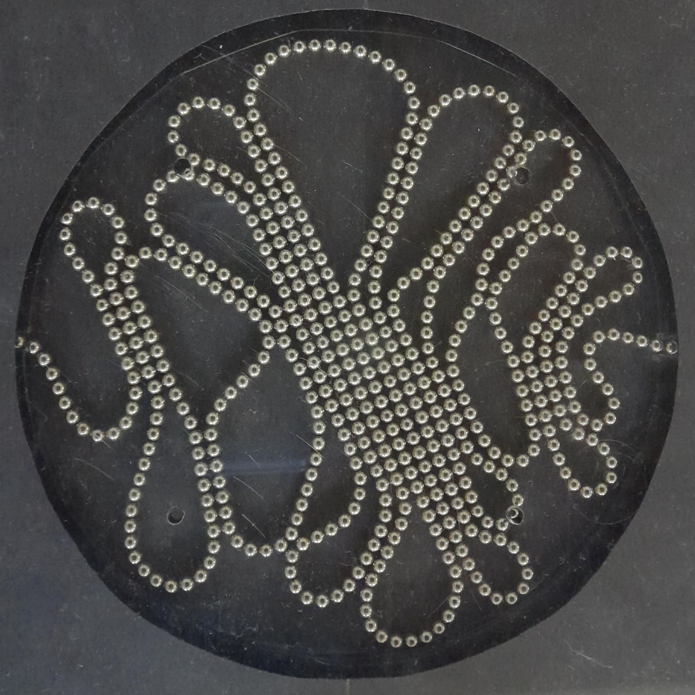
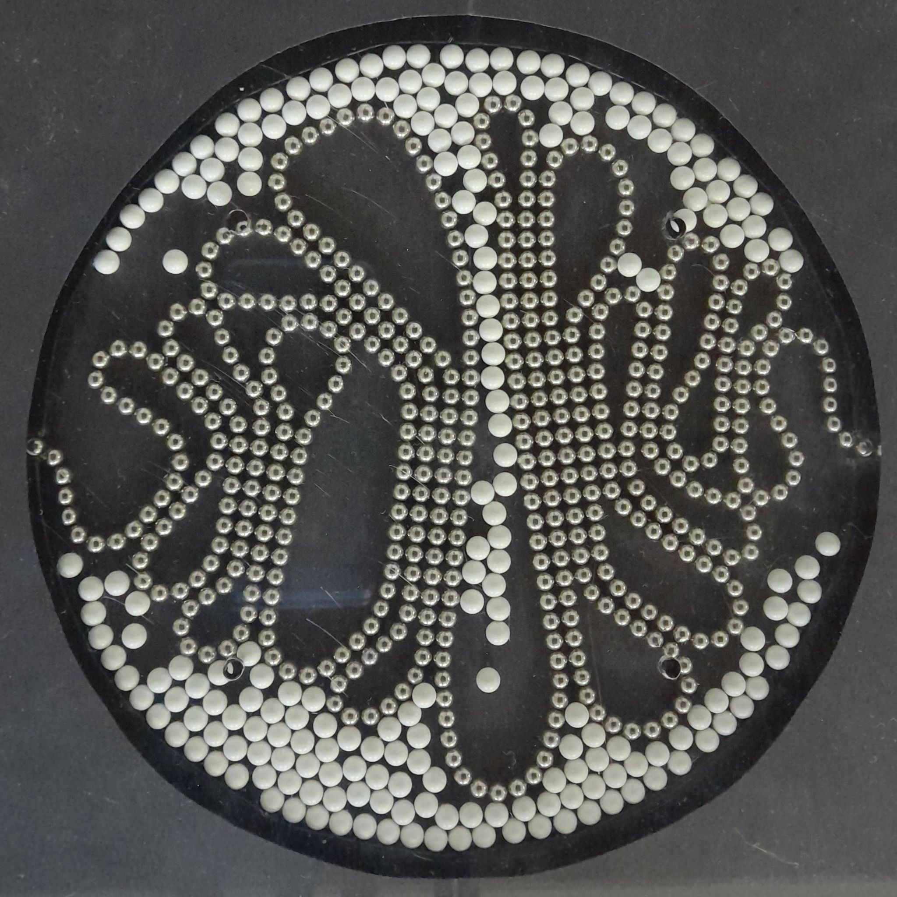
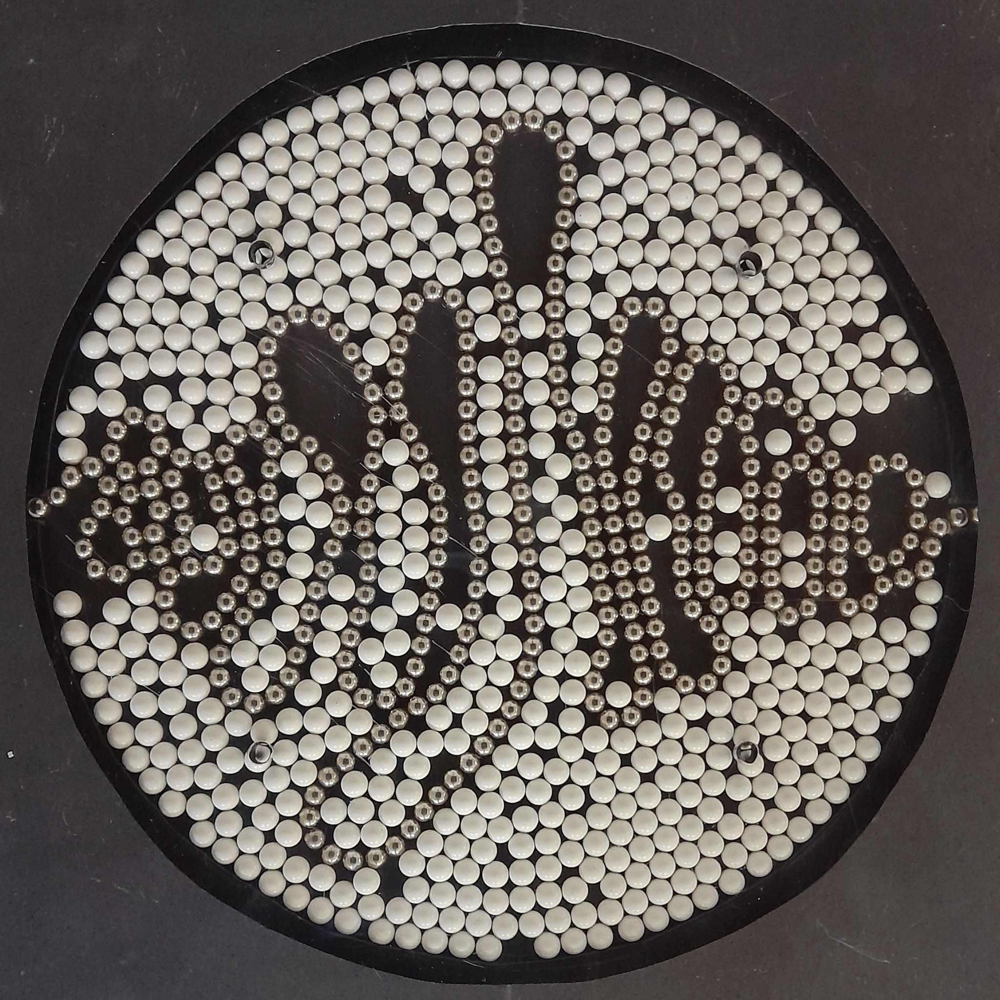
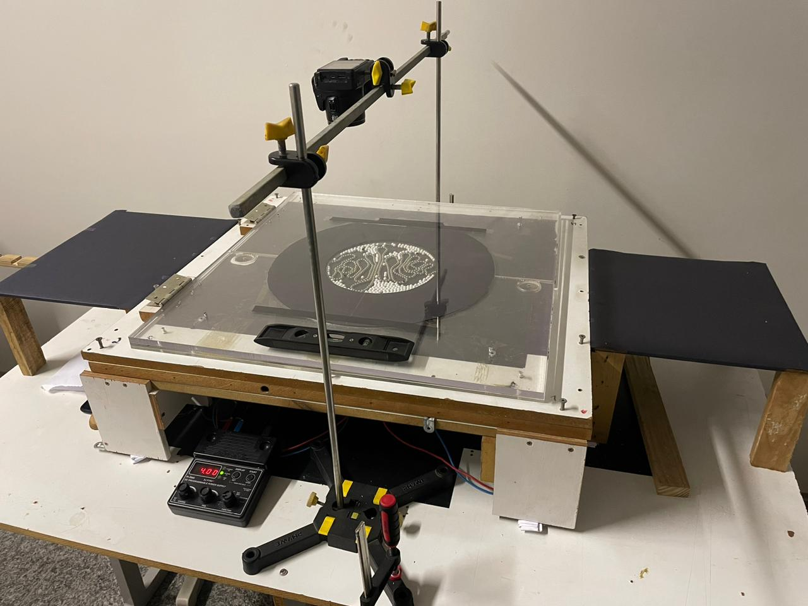
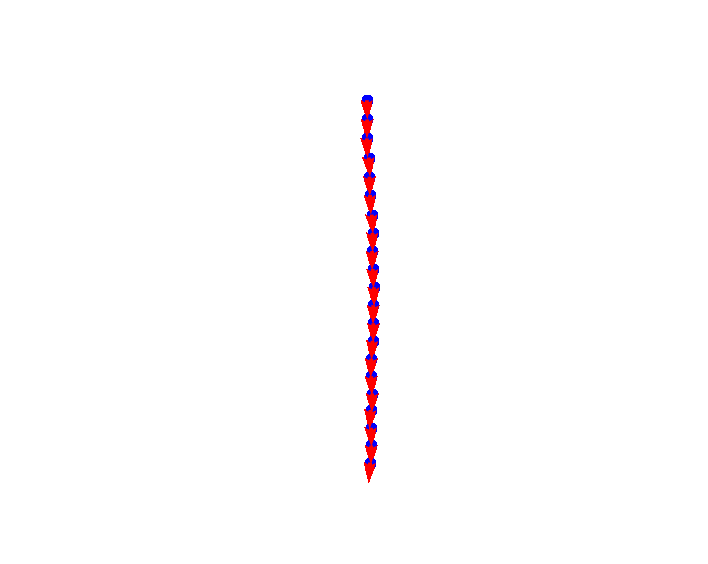

Visão Geral
Esta pesquisa investiga o empacotamento de partículas magnéticas em uma cavidade bidimensional, utilizando cadeias de esferas de neodímio injetadas em substrato granular não interagente. A formação de padrões geométricos auto-organizados é analisada em função da orientação inicial dos dipolos e da fração de preenchimento do substrato. As análises revelam transições geométricas e magnéticas, a formação de domínios antiferromagnéticos no regime “Loop” e ferromagnéticos no regime “Espiral”. Os resultados contribuem para o entendimento de materiais auto-organizáveis e modelos inspirados em sistemas biológicos, como colóides e cadeias de bactérias magnetotáticas.



Padrões experimentais de empacotamento de fios magnéticos em função da fração de preenchimento do substrato (σ), ilustrando os casos σ = 0.0, σ = 0.2 e σ = 0.5, respectivamente.

Montagem experimental utilizada para o estudo do empacotamento de partículas magnéticas em cavidade bidimensional



Representação do empacotamento de partículas magnéticas em cavidade bidimensional para o regime "Loop". Da esquerda para a direita: (i) imagem experimental mostrando o arranjo de esferas de neodímio injetadas diametralmente em uma cavidade circular; (ii) reconstrução computacional com orientação dos dipolos magnéticos indicadas por setas (vermelho); (iii) campo magnético resultante calculado por minimização de energia, com linhas de campo e mapa de intensidade destacando regiões de concentração de fluxo e formação de domínios antiferromagnéticos.